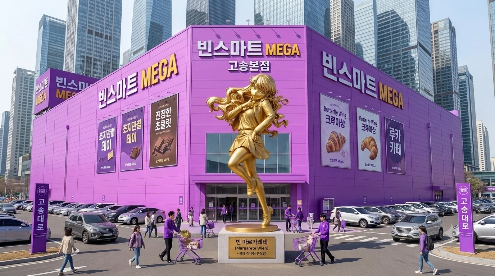
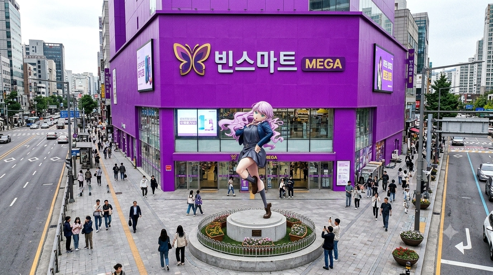
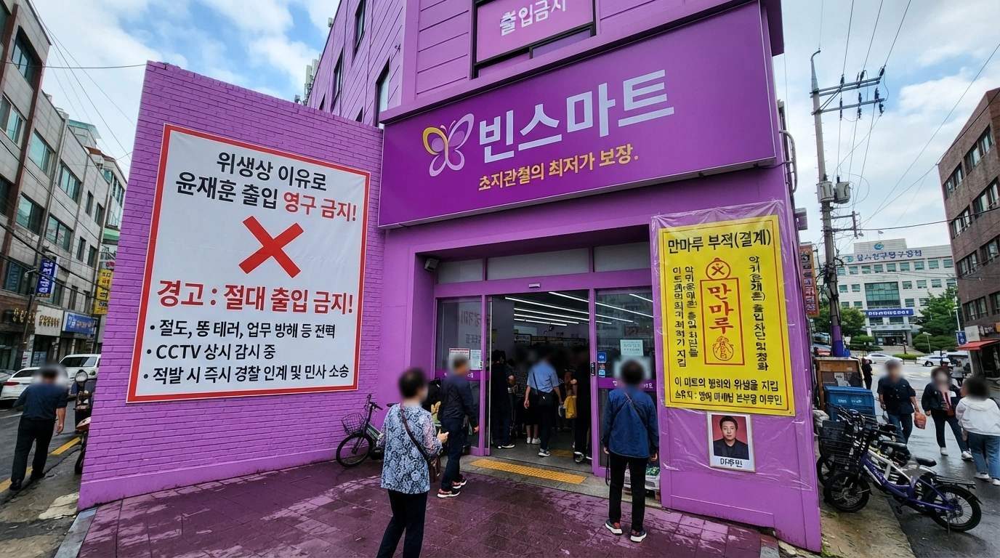
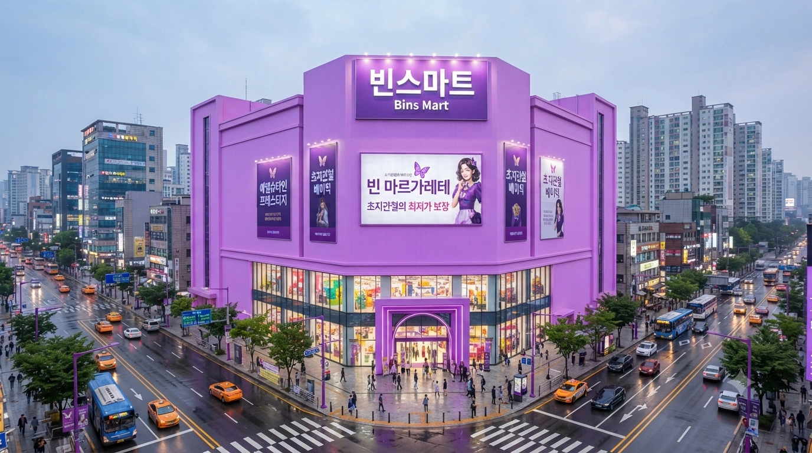
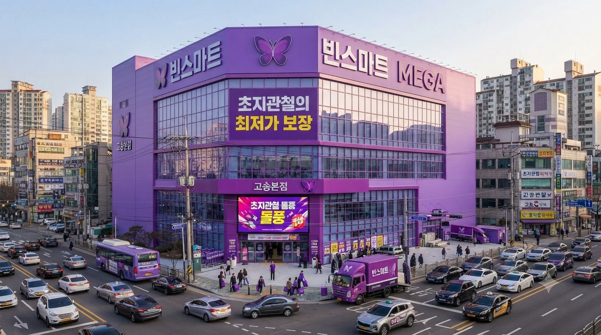
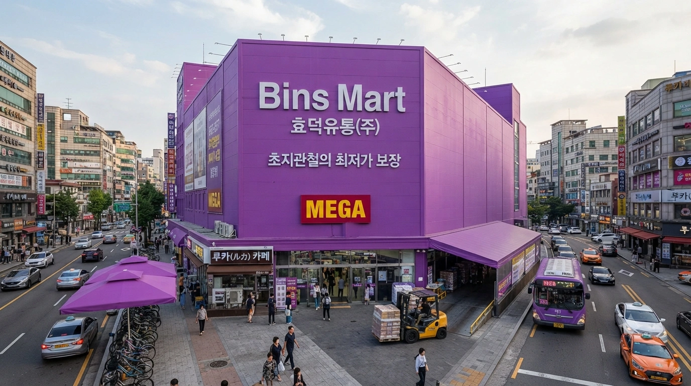
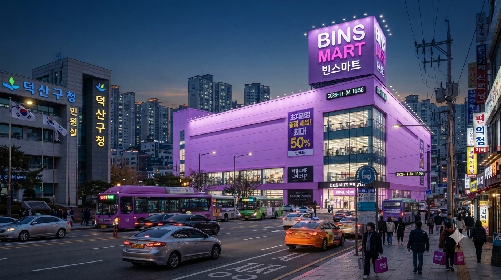

효빈광역시 및 덕빈권(덕빈북도, 덕빈남도)을 꽉 잡고 있는 지역 최강의 향토 유통업체. 부울경에 탑마트(서원유통)가 있다면, 효덕권에는 '빈스마트(효덕유통)'가 있다.
원래는 '효빈스마트'라는 지극히 향토적인 이름이었으나, 덕빈권 전체로 사업을 확장하며 지역색을 빼기 위해 '효'를 떼고 빈스마트가 되었다. 그런데 현 대표이사인 최영희의 남편 성씨가 하필 '마'씨인 탓에, 사장 딸의 이름이 '마루빈'이 되어버렸고, 이 이름이 효빈시를 지배하는 서브컬처 유니버스의 핵심 인물 '빈 마르가레테(Wien Margarete)'와 완벽하게 겹쳐버렸다. 여기에 효빈시 특유의 '오타쿠 특화 정책'과 더불어, 마루빈(2006년생) 본인이 명예 마케팅 본부장으로 경영 전면에 나서면서 마트 전체가 빈 마르가레테 테마로 강제 개조되어 버린 전무후무한 덕업일치 유통 체인이다. 특유의 거만하지만 미워할 수 없는 "이 정도 세일은 통과점에 지나지 않아!"라는 마케팅이 덕후들과 지역 주민들의 지갑을 동시에 열게 만들고 있다. 사실상 마트의 탈을 쓴 마르가레테 테마파크다
점포망은 거점 역할을 하는 대형마트(하이퍼마켓) 7개 지점과, 골목 상권 및 읍·면 단위를 거미줄처럼 촘촘히 장악한 71개의 기업형 슈퍼마켓(SSM)으로 엄격하게 나뉜다. 건물 외관은 전부 쨍한 보라색(엘레강트 퍼플)으로 칠해져 있어 멀리서도 미친 존재감을 자랑한다. 직원들의 유니폼 역시 보라색 앞치마와 나비 문양 명찰이 기본이며, 매장 내 BGM으로는 일반적인 촌스러운 마트 로고송 대신 빈 마르가레테의 솔로곡인 'Butterfly Wing', '에델슈타인', 'ルカ(루카)'가 무한 반복 재생된다. 시식 코너 만두를 먹으면서 나도 모르게 가성을 지르게 된다 카더라
마루빈(2006년생)은 사장의 딸이라는 이유로 이사 자리에 낙하산으로 꽂히는 세간의 관행을 비웃듯, 10대 후반부터 시급 9,860원짜리 주말 캐셔 견습 알바부터 시작해 바닥에서부터 기어올라왔다. 알바 시절, 반말을 일삼는 진상 고객에게 특유의 서늘하고 오만한 표정으로 "이미와칸나이(의미를 모르겠어)! 당장 내 마트에서 나가!"를 시전해 오히려 지역의 명물 알바생으로 이름을 날렸다.
현재는 20대 대학생 신분으로 '명예 마케팅 본부장' 직함을 달고 있지만, 여전히 "진정한 유통의 정점은 현장에 있다"며 암행어사처럼 매장을 순찰한다. 진열대가 비어있거나 불량 식품을 발견하면 "이딴 품질로 감동을 주겠다는 거야?!"라며 호통을 친다. 그녀의 경영 철학은 마르가레테의 좌우명과 같은 '초지관철(처음 품은 뜻을 끝까지 꿰뚫음)'이며, 이에 따라 마트의 모든 세일과 품질 보증 시스템이 '초지관철'이라는 이름으로 브랜딩되었다.
효덕유통의 진짜 실세이자 마루빈의 어머니인 최영희 대표이사는 딸의 서브컬처 취미를 억압하기는커녕, 이를 '초특급 블루오션 마케팅'으로 완벽하게 승화시킨 무서운(?) 장사꾼이다. "이왕 덕질할 거면 매출로 증명해라"라는 마인드로 마루빈 본부장에게 전권을 위임함과 동시에, 스스로도 기상천외한 게릴라 이벤트를 수시로 기획하여 덕후들의 지갑을 털어간다.
탑마트에 '수목돌풍'이 있다면, 빈스마트에는 '초지관철 돌풍(에델슈타인 위크)'이 있다.
마루빈 본부장의 결벽에 가까운 품질 관리와 오타쿠 친화적 네이밍 센스가 융합된 빈스마트만의 자체 브랜드(PB) 라인업. 마루빈은 매달 R&D 부서를 직접 쪼며 "이딴 공장제 맛으로 내 이름을 걸겠다고? 전부 폐기해!"라며 깐깐하게 검수한다. 크게 4가지 세부 브랜드로 나뉘며, 총 100줄 분량의 기획서가 존재할 정도로 종류가 방대하고 치밀하다.
현재 총 78개의 매장을 운영 중이며, 매장 면적이 3,000㎡를 초과하여 법적으로 대형마트(하이퍼마켓)로 분류되는 7개 지점은 가장 상위에 적고 굵은 글씨로 서술한다. 나머지 71개 점포는 모두 기업형 슈퍼마켓(SSM) 규격이다.
※ 연락처는 효덕권 국번 부여 규칙(079, 078, 077 및 100번대 할당 룰)을 엄격하게 적용하였다.
효덕권 전체를 통틀어 단 7곳만 존재하는 플래그십 점포. 각 권역의 심장부에 박혀 상권을 싹쓸이하며, 공간이 넓어 서브컬처 관련 특수 부스가 종종 설치된다. 건물 외관 전체가 엘레강트 퍼플로 도색되어 있어 멀리서도 눈뽕을 선사한다.
| 권역 | 점포명 | 주소 | 연락처 | 휴무 | 특징 및 상세정보 |
|---|---|---|---|---|---|
| 효빈 (북구) | 고송본점 MEGA | 북구 고송대로 79 | 079-523-8200 | [월2회A] |
 빈스마트 본사 소재지. 전국 유일 '빈 마르가레테 실물 황금 등신대'가 입구에 설치되어 있다. 밤마다 마루빈 본부장이 몰래 닦고 간다는 괴담이 있다. 주변 도로가 이 마트 때문에 주말마다 마비된다. |
| 효빈 (남구) | 남구청점 MEGA | 남구 평당대로 45 | 079-451-3000 | [월2회A] |
 남구청 맞은편. 인구 15만 평당신도시 상권을 통째로 집어삼킨 거대 매장. 식품관 시식 코너 인심이 덕빈권 최고를 자랑하여 밥을 안 먹고 가도 배가 부르다. |
| 효빈 (창전구) | 창전구청점 MEGA | 창전구 창전로 10 | 079-822-7711 | [월2회A] |
 터미널 똥테러범 윤재훈의 서식지와 가까워, 입구에 "위생상 이유로 윤재훈 출입 영구 금지" 안내문과 '만마루 부적(결계)'이 대문짝만하게 붙어 있는 방어 특화 매장. |
| 덕북 (빈주시) | 빈주점 MEGA | 가원구 천조대로 20 | 078-125-5000 | [월2회A] |
 덕빈북도 최대 도시의 행정/주거 수요를 책임지는 덕북권 플래그십 점포. 지하 1층 전체가 프리미엄 '에델슈타인' 식품관으로 도배되어 있다. |
| 덕북 (천주시) | 천주점 MEGA | 천성구 관아로 77 | 078-233-1020 | [월2회A] |
 천주시 광역 수요 커버. 외곽 교통 요지에 위치해 원정 쇼핑객 비율이 가장 높아 주말마다 주차장 진입로에서 레이싱이 벌어진다. |
| 덕남 (방산시) | 방산점 MEGA | 방산대로 200 | 077-241-8800 | [월2회C] |
 산업단지 공단 아재들을 타겟으로 한 매장. 초대용량 HMR 및 정육 코너가 도내 최대 규모이며, 엘레강트 퍼플 간판 아래로 지게차가 돌아다닌다. |
| 덕남 (덕주시) | 덕주덕산점 MEGA | 덕산구 덕산대로 100 | 077-134-2200 | [월2회A] |
 덕빈남도청 바로 옆. 야근하는 공무원들이 좀비처럼 걸어와 카페인과 도시락을 박스째로 사가는 야간 핫플레이스. |
효빈시 조례에 따라 일부 특화 점포를 제외하고 대부분 짝수주 일요일에 휴무(`[월2회A]`)한다.
| 행정구역 | 점포명 | 연락처 | 특징 및 상세정보 |
|---|---|---|---|
| 북구 | 소조점 SSM | 079-341-2841 | 신선식품 회전율 효빈시 내 최상위. 저녁 6시만 되면 고기 매대가 텅 빔. |
| 중수점 SSM | 079-325-1192 | 지하 1층에 오타쿠 고객용 비공식 가챠 기계 10대가 은밀하게 설치되어 있다. | |
| 청능점 SSM | 079-352-7740 | [정상영업] 인근 자영업자들을 위한 대용량 식자재 코너 별도 운영. | |
| 오내점 SSM | 079-315-9921 | ||
| 남구 | 평당점 SSM | 079-421-5050 | 대형마트인 남구청점의 어마어마한 수요를 분산하기 위해 세워진 보조 점포. |
| 곽산점 SSM | 079-473-1004 | [정상영업] 수입 과자 및 프리미엄 초콜릿(에델슈타인) 라인업 1위 매장. | |
| 어간점 SSM | 079-482-2020 | ||
| 창전구 | 동곡점 SSM | 079-815-3344 | |
| 진백점 SSM | 079-842-1212 | [정상영업] | |
| 칠심점 SSM | 079-855-6000 | 인근 농가에서 갓 떼온 채소를 파는 지역 밀착형 로컬푸드 코너 특화. | |
| 팔조점 SSM | 079-892-4545 | ||
| 청엽구 | 마잡점 SSM | 079-721-3939 | 길 건너편 이마트 마잡점을 견제하기 위해 대놓고 출점. 10원 단위로 삼겹살 가격 전쟁을 벌인다. |
| 우전점 SSM | 079-743-8080 | ||
| 비마점 SSM | 079-765-2121 | ||
| 안천구 | 안천점 SSM | 079-923-4000 | 수산물 참치 해체 쇼 때 수산코너 장인이 "바다의 천재를 보여주겠어!"라고 샤우팅을 치는 명소. [월2회B] |
| 이자점 SSM | 079-951-8282 | 1인가구 원룸촌 밀집 지역. 밀키트와 HMR 매출이 효빈시 1위다. [월2회B] | |
| 악부점 SSM | 079-964-1010 | [월2회B] | |
| 창건점 SSM | 079-982-3030 | [정상영업] | |
| 서구 | 과진점 SSM | 079-612-4411 | |
| 당선점 SSM | 079-634-5522 | ||
| 청덕점 SSM | 079-651-7000 | [정상영업] 면적은 코딱지만한 SSM인데 일매출은 대형마트급을 찍는 전설의 알짜 점포. | |
| 동구 | 덕현점 SSM | 079-241-8000 | 구도심이라 어르신 고객이 많아, 모든 가격표의 '초지관철' 폰트가 유독 크다. |
| 사가당점 SSM | 079-263-9191 | ||
| 전천점 SSM | 079-282-3311 | ||
| 중구 | 중앙로점 SSM | 079-215-6000 | [정상영업] 중구 원도심. 혼밥족을 위한 소포장 과일과 초밥/도시락 라인업 특화. |
| 내조점 SSM | 079-234-7722 | [정상영업] | |
| 탄성군 | 도변점 SSM | 079-124-5050 | [월2회B] 도변 신도시 한복판 노른자 땅을 차지했다. |
| 탄성읍점 SSM | 079-142-3300 | [월2회B] | |
| 흑택점 SSM | 079-175-8822 | [월2회B] 도농복합지역 특성을 살려, 호미나 비료 같은 대용량 농자재 취급 비율이 높음. |
| 행정구역 | 점포명 | 연락처 | 특징 및 상세정보 |
|---|---|---|---|
| 빈주시 | 상만점 SSM | 078-135-4422 | 아파트 단지 대형 상가 지하를 통째로 매입해 요새처럼 운영 중. |
| 지산점 SSM | 078-142-9900 | ||
| 장기점 SSM | 078-151-2020 | [정상영업] 퀵커머스(배달) 특화 점포. 매장 앞은 전동 킥보드 배달원들이 항시 대기 중. | |
| 오택점 SSM | 078-163-5511 | ||
| 동신점 SSM | 078-182-7744 | ||
| 천주시 | 궁하점 SSM | 078-214-3000 | [정상영업] 심야 시간대에는 무인으로 돌아가는 24시간 하이브리드 시범 운영 점포. |
| 인자점 SSM | 078-245-8811 | ||
| 낭원군 | 낭원읍점 SSM | 078-281-4040 | [월2회B] |
| 약산시 | 장곡점 SSM | 078-321-5000 | 마루빈 본부장 고안 '상어 젤리' 전국 매출 1위 지점. 아이들 손잡고 오는 맘카페 회원들이 쓸어간다. |
| 화소점 SSM | 078-344-2211 | ||
| 선곡군 | 선곡읍점 SSM | 078-362-9933 | [월2회B] |
| 치원군 | 치원읍점 SSM | 078-385-7000 | [월2회B] 초지관철 데이에는 경운기나 트랙터를 몰고 오는 할아버지들이 출몰해 도로가 마비된다. |
| 계성시 | 계성점 SSM | 078-412-5522 | |
| 덕현군 | 덕현읍점 SSM | 078-451-3311 | [월2회B] |
| 강주시 | 강주신항점 SSM | 078-514-8000 | 강주시 남부 신항만 배후단지 장악. 외국인 노동자들을 위한 이국 식자재 코너가 크다. |
| 전산시 | 전산점 SSM | 078-623-7722 | [월2회B] |
| 서진시 | 서진점 SSM | 078-715-3000 | [월2회B] 윤재훈 '런 실패 사건' 터미널 근처. 보수 텃밭 한가운데에 엘레강트 퍼플 간판을 박아넣은 패기의 지점. |
| 아은점 SSM | 078-732-8811 | [월2회B] | |
| 서해시 | 서해점 SSM | 078-821-4400 | 항구 도시답게 수산물 코너의 선도가 덕북 탑급을 자랑한다. 매일 새벽 경매장에서 직송해온다. |
| 우궁점 SSM | 078-843-9922 |
| 행정구역 | 점포명 | 연락처 | 특징 및 상세정보 |
|---|---|---|---|
| 덕주시 | 조전점 SSM | 077-125-6000 | 신도시 핵심 상권. 2층 문화센터에 '오타게 댄스' 및 '코스프레 소품 제작' 강좌가 은근슬쩍 개설되어 절찬리 운영 중. |
| 원명점 SSM | 077-141-2211 | [정상영업] 구도심 상권 커버. | |
| 화주점 SSM | 077-162-8000 | 즉석 반찬 코너의 퀄리티가 미쳐서, 저녁 7시 마감 세일 때 주부들 사이에서 피 터지는 카트 쟁탈전이 벌어진다. | |
| 분주군 | 분주읍점 SSM | 077-185-3344 | [월2회B] |
| 방산시 | 서중점 SSM | 077-214-5000 | 읍내 유일의 대규모 자본 마트로 지역 독점적 지위를 누린다. |
| 청전점 SSM | 077-232-7711 | [정상영업] | |
| 주강점 SSM | 077-251-4040 | ||
| 석창군 | 석창본점 SSM | 077-283-9000 | [월2회B] 과거경쟁 중소 마트 자리를 인수한 뒤, 건물을 엘레강트 퍼플로 악랄하게 도색하여 상권을 엎어버렸다. |
| 곡천군 | 곡천읍점 SSM | 077-312-5522 | [월2회B] 매장 입구에 "진정한 할인을 알려주겠어!" 마르가레테 등신대 패널 구비. |
| 인곡군 | 인곡읍점 SSM | 077-341-8811 | [월2회B] |
| 고포군 | 고포읍점 SSM | 077-375-3000 | [월2회B] |
| 비천시 | 비천항점 SSM | 077-423-7000 | [월2회B] 바닷가 점포답게 갈매기(도조)들이 옥상 주차장에 진을 쳐서 세차 민원이 가끔 들어온다. |
| 하정시 | 별당점 SSM | 077-461-2244 | [월2회B] 인구 소멸 우려 지역임에도 읍내 경제의 든든한 최후 보루 역할을 수행 중. |
| 운진군 | 운진읍점 SSM | 077-512-5000 | [월2회B] 군 단위 SSM 중 전국 최고 수준 매출. 초지관철 데이 땐 지역 군수마저 줄을 서서 세일 고기를 사간다. |
| 운남점 SSM | 077-534-8822 | [월2회B] | |
| 마진시 | 마진점 SSM | 077-551-3311 | 어린이 인구가 많아 '초지관철 우유' 소비량이 덕남에서 가장 높은 유제품 특화 점포. |
| 두원군 | 두원읍점 SSM | 077-572-4040 | [월2회B] |
| 관수군 | 관수읍점 SSM | 077-591-9900 | [월2회B] 마트가 없는 주변 산간 오지 주민들에게 생필품을 보급하는 전초 기지. |
| 매산군 | 대현점 SSM | 077-624-5000 | [정상영업] 매산군 농협과 연계, 농산물 매출 비중이 50%를 넘어 대형마트 의무휴업 규제를 피했다. |
| 낙주시 | 낙주중앙점 SSM | 077-713-8000 | 전라남도와 바로 연결되는 관문에 위치해 호남권 원정 쇼핑객도 자주 찾는 교통 요충지. |
| 삼채점 SSM | 077-741-2211 | "내 마블링은 통과점에 지나지 않아!"라는 열혈 정육 장인의 샤우팅을 주말마다 들을 수 있다. |
효덕권 최고의 마트인 만큼 하루가 멀다 하고 빌런들이 출몰하지만, 빈스마트 특유의 살벌한 서브컬처 인프라와 매운맛 캐릭터들에 의해 무참히 참교육 당하는 것으로 유명하다. 특히 '리에하스 연합' 멤버들과 마루빈이 엮인 에피소드는 수백 줄을 적어 내려갈 만큼 전설로 내려온다.
효빈위키 공인 동네 북이자 망언 제조기인 빌런 정철규(1957년생)가 명절을 앞두고 고송본점 정육 코너에 낡은 정장 차림으로 나타났다. 그는 가격표도 제대로 보지 않은 채 가장 비싼 '빈스 유기농 트러플 한우 1++ 세트(50만 원 상당)'를 집어 들고는 다짜고짜 계산대에 올리며 90% 할인을 요구했다.
"내가 누군지 알아? 어?! 내가 예전에 말이야, 서구 당협위원장도 하고, 지역 사회에 뼈를 묻은 경찰 간부 출신이야! 나 같은 오피니언 리더이자 1인 가구의 인권 보장 차원에서 이 고기는 특별히 만 원에 넘겨라!"라며 얼굴을 붉히고 얼토당토않은 진상을 부렸다. 당황한 20대 알바생이 "고객님, 저희 마트는 정찰제라 그런 할인은 규정상 불가능합니다."라고 정중히 거절하자, 정철규는 "어린놈의 쉐끼가 융통성이 없어! 점장 당장 불러와!"라며 소리를 지르고 멀쩡한 카트를 걷어차며 위협을 가했다.
그때, 매장 내 클래식 BGM을 뚫고 또각또각 구두 소리가 울려 퍼졌다. 마침 매장을 암행 순찰 중이던 마루빈 본부장(당시 알바생 신분)이 팔짱을 낀 채 다가온 것이었다. 상황을 단숨에 파악한 마루빈은 특유의 사람을 깔보는 듯한 썩은 표정을 지으며 "이미와칸나이(의미를 모르겠어)! 늙은이가 어디서 구질구질하게 행패야! 이딴 빈곤하고 미개한 사고방식으로 내 마트를 더럽히지 마! 네깟 놈에게 팔 한우는 단 1그램도 없으니까 당장 꺼져!"라고 매장 전체가 쩌렁쩌렁 울리게 일갈했다.
기세에 완전히 눌려 입을 뻐끔거리던 정철규가 "너, 너 이 자식 내가 누군지 알아! 버르장머리 없이!"라고 더듬거리며 삿대질을 하자, 마루빈은 코웃음을 치며 "알게 뭐야! 여기 보안팀, 이 폐기물 당장 밖으로 치워버려!"라고 지시했다. 결국 정철규는 효빈고속 정비공 출신의 건장한 보안요원 두 명에게 양팔이 결박된 채 공중으로 들려 마트 밖 아스팔트 바닥으로 내동댕이쳐졌고, 주변에서 숨죽여 지켜보던 수십 명의 고객들은 일제히 환호성과 박수갈채를 보냈다.
효빈시 최고의 고립된 역세권 호소인이자 주민들의 끔찍한 선민의식으로 악명 높은 평당 아르티엠(남구 평당동 소재). 이 아파트의 이른바 '엘리트 부녀회' 회원 20여 명이 어느 날, 차로 10분 거리에 있는 빈스마트 남구청점 정문 앞에 진을 치고 시위를 벌였다. 그들이 들고 온 피켓에는 "동네 수준 떨어진다! 싸구려 씹덕 마트 퇴출하라! 프리미엄 백화점을 유치하라!"라는 어처구니없는 문구가 적혀 있었다. 자신들의 명품 아파트 주변에 대형 할인점이 있는 것 자체가 집값을 떨어뜨리는 요인이라며 행패를 부린 것이다.
보고를 받고 빡친 마루빈 본부장이 직접 정문으로 행차했다. 그녀는 확성기를 들고 시위대를 향해 비웃음을 날렸다. "너희들이 그 잘난 아르티엠 주민들이라고? 웃기지 마. 우리 남구청점 지하 1층 반찬 코너 한 구역의 하루 매출과 인테리어 비용이, 너희 그 부실 공사로 지어진 아파트 안방 하나보다 훨씬 비싸고 가치 있어! 어디서 주제 파악도 못 하고 감히 내 구역에서 짖어대는 거야?!" 마루빈의 신랄한 팩트 폭격에 부녀회장 얼굴은 붉으락푸르락 해졌다.
하지만 진짜 코미디는 시위가 끝난 직후에 벌어졌다. 시위를 주도하며 빈스마트를 싸구려라 욕하던 그 '고급' 부녀회원들이, 저녁 6시가 되자 선글라스와 썬캡으로 얼굴을 꽁꽁 가리고 대형 락앤락 반찬통을 챙겨 빈스마트 식품관으로 스며든 것이다. 그녀들은 만두 코너와 불고기 코너를 돌며 시식용 이쑤시개로 고기를 무호흡으로 쓸어 담고, 심지어 반찬통에 몰래 시식용 음식을 주워 담다 보안요원에게 현행범으로 적발되었다.
이 기막힌 내로남불 행태를 CCTV 룸에서 지켜보던 마루빈은 대폭소했고, 즉시 그들의 얼굴을 고화질로 캡처하여 "시식 코너 블랙리스트: 아르티엠 거주자 출입 및 시식 엄금"이라는 경고문과 함께 매장 곳곳에 대문짝만하게 붙여버렸다. 평당 아르티엠의 졸부들은 온 동네의 웃음거리가 되었고, 다시는 남구청점 근처에 얼씬도 하지 못했다.
하스노소라 분파의 핵심 멤버이자 압도적인 물리력을 자랑하는 백모모(긴코 포지션)가 빈스마트 중수점 지하 1층에 은밀하게 설치된 '오타쿠 전용 비공식 가챠 기계' 코너를 방문했다. 자신이 가장 좋아하는 캐릭터의 한정판 아크릴 스탠드를 뽑기 위해 그동안 모아둔 알바비를 털어 5만 원 권을 연달아 기계에 쑤셔 넣었다.
그러나 기계는 잔인하게도 10번 연속으로 가장 인기 없는 '꽝(중복 캔뱃지)'만을 토해냈다.
순간 이성의 끈이 끊어진 백모모는 "아니, 확률 조작 아니냐고!"라며 홧김에 가챠 기계의 아크릴 유리를 주먹으로 '콩' 하고 가볍게 내리쳤다. 하지만 그녀의 인간을 초월한 완력을 버티지 못한 가챠 기계는 폭탄을 맞은 것처럼 와장창 박살이 났고, 기계 안에 있던 수백 개의 가챠 캡슐이 매장 바닥으로 와르르 쏟아져 내렸다.
사태의 심각성을 깨달은 백모모는 사색이 되어 그 자리에 주저앉았고, 경보음을 듣고 뛰어온 마루빈 본부장과 대면하게 되었다. 마루빈이 수리비 청구서를 들고 서늘하게 쳐다보자, 백모모는 덜덜 떨며 지갑에서 두툼한 현금 다발(과거 공사장 알바로 번 돈)을 꺼내 그 자리에서 기계 값을 전액 현찰로 배상했다. 마루빈은 그녀의 무식한 물리력과 깔끔한 배상 태도를 묘하게 인정하긴 했으나, 이후 "야생 곰 및 백모모 가챠 코너 출입 금지" 푯말을 세워버렸다.
유세라의 충실한 룸메이트이자 기사(메이드) 역할을 자처하는 이주미(이즈미 포지션)가, 유세라 영애가 행차하기 30분 전 빈스마트 남구청점에 먼저 파견을 나왔다. 임무는 바로 '세라스 님'이 드실 간식에 독이 들었는지 미리 검사하는 이른바 '기미상궁' 역할이었다.
이주미는 진지한 표정으로 최고급 프리미엄 PB 라인인 '에델슈타인 초콜릿' 매대로 다가가, 포장도 안 뜯은 새 초콜릿 상자 5개의 봉인을 무단으로 뜯고 내용물을 한 입씩 베어 물기 시작했다.
그 모습을 매장 순찰 중이던 마루빈이 발견하고 경악하며 소리쳤다. "야!! 너 지금 내 완벽한 에델슈타인 초콜릿에 무슨 짓을 하는 거야?!" 이주미는 입가에 초콜릿을 묻힌 채 당당하게 "세라스 님이 드실 성스러운 일용할 양식에 독이 있는지 기미(氣味)를 보는 중입니다만?"이라고 대꾸했다.
마루빈의 이마에 핏대가 섰고, 두 사람은 매대 한가운데서 숨 막히는 눈싸움을 벌였다. 결국 마루빈의 압도적인 '사장 딸' 포스에 밀린 이주미는 꼬리를 내렸고, 자신이 뜯어버린 5박스(약 25만 원어치)를 전액 사비로 결제해야만 했다. 영수증을 받아 든 이주미는 한 달 치 용돈이 증발했다며 매장 구석에서 엉엉 울었고, 뒤늦게 도착한 유세라가 "나의 멍청한 기사여..."라며 한숨을 쉬었다.
버튜버 안공주의 든든한 파트너이자 방송인인 임은혜(메구미 포지션)가 시청자 미션으로 '빈스마트 저녁 9시 마감 타임세일 반값 연어회 쟁취하기' 야외 방송을 켰다. 그녀는 스마트폰 짐벌을 들고 카트를 끈 채 비장하게 수산물 코너 진입로에 대기했다.
저녁 9시 정각, 직원이 "연어회 50% 마감 세일 스티커 붙입니다!"라고 외치는 순간, 주변에 잠복해 있던 인근 공단 함바집(식당) 사장님들 수십 명이 거대한 평판 카트를 끌고 일제히 돌격하기 시작했다.
임은혜는 "시청자 여러분, 저 메구미가 반드시 쟁취하겠습니다! 부스터 온!"이라며 고성능 우레탄 바퀴가 장착된 카트를 맹렬하게 밀며 식당 사장님들과 카트 레이싱(카체이싱)을 벌였다. 코너를 돌 때마다 바퀴에서 '끼이익!' 하는 드리프트 소리가 울려 퍼졌고, 방송 채팅창은 "마리오 카트 실사판 ㅋㅋㅋ", "이니셜 D 브금 틀어라"라며 열광의 도가니가 되었다.
치열한 몸싸움 끝에 임은혜는 마지막 남은 연어회 한 팩을 손에 넣는 데 성공했다. 하지만 승리의 기쁨에 취해 앞을 보지 못하고 질주하다가, 메인 통로에 산처럼 쌓여 있던 '관철의 두루마리 휴지 30롤' 탑에 카트째로 들이박고 말았다. 휴지 100여 팩이 와르르 무너지며 그녀를 덮쳤고, 이 대참사는 생방송으로 수천 명에게 송출되었다. 결국 그녀는 엎어진 휴지 탑을 직원들과 함께 30분 동안 울면서 다시 쌓아야 했다.
자칭 '계엄사령관' 윤재훈이 이번에는 삼겹살 초특가 세일 날 정육 코너에 난입했다. 그는 군복도 아닌 이상한 예비군 야상에 조잡한 완장을 차고 확성기를 든 채, 냉동 탑차에서 방금 내린 돼지고기 매대 위로 기어 올라갔다. "지금부터 이 매장의 돼지고기는 계엄군이 전부 압수한다! 오타쿠 자본에 오염된 고기를 선량한 시민들이 먹게 둘 순 없다!"라며 기적의 논리로 무단 점거를 시도했다.
하필 그 시각, 저녁 방송을 켠 채 핫도그 재료를 사러 온 프로게이머 겸 버튜버 안공주(히메)가 이 꼴불견을 카메라에 고스란히 담게 되었다. 안공주는 카메라 렌즈를 윤재훈의 콧구멍까지 들이대며 "와, 시청자 님들 저 아저씨 뇌절 오지네 ㅋㅋㅋ 님들 저거 실화임? 계엄령 같은 소리 하네, 나이 먹고 방구석 여포 짓이나 하니까 선거에서 낙선하지 ㅋㅋㅋ"라며 특유의 찰진 게이머 입담으로 윤재훈의 멘탈을 긁었다.
실시간 스트리밍 채팅창에는 "ㅋㅋㅋ", "ㄹㅇㅋㅋ", "계엄군(백수)" 등의 도네이션이 폭주했다. 팩폭에 당황한 윤재훈이 얼굴을 붉히며 "이 반국가 세력아! 체포하겠다!"며 손을 뻗자, 안공주는 카트에 실려 있던 '냉동 벽돌 삼겹살 5kg(물리 방어력 100)'를 번쩍 들어 올리며 "오냐, 대가리에 물리 치료 들어간다! 뚝배기 깨지기 싫으면 내려와라!"라고 위협했다. 그 흉악한 무기(?)의 자태에 쫄아버린 윤재훈은 확성기를 내팽개치고 뒤도 안 돌아보고 도망쳤다.
동구대 산업디자인학과 재학생이자 '체스토!'가 입버릇인 도소영(2007년생)이 동구점 무빙워크를 타고 지하 1층으로 내려오던 중이었다. 앞에 서 있던 어떤 아주머니가 통화에 한눈을 판 사이, 생수 6개들이 5팩(약 60kg)을 싣고 있던 무거운 카트의 손잡이를 놓쳐버렸다. 무빙워크의 경사를 타고 가속도가 붙은 카트는 끔찍한 속도로 굴러내려 가기 시작했고, 그 궤도 끝에는 아장아장 걷고 있는 세 살배기 아기가 있었다.
대형 사고가 발생하기 직전의 위기 상황, 무빙워크 상단에 있던 도소영의 눈빛이 변했다. 그녀는 "체스토오오오!!"라는 사무라이 같은 우렁찬 기합과 함께, 무빙워크를 두 칸씩 뛰어넘으며 맹렬하게 질주했다. 그녀는 카트가 아기를 덮치기 불과 1초 전, 맨손으로 100kg이 넘는 카트 범퍼를 낚아채어 멈춰 세웠다. 마찰력 때문에 소영의 컨버스 운동화 바닥에서 타는 냄새가 날 정도였다.
이 기적적인 세이브 장면을 CCTV로 본 마루빈은 즉시 현장으로 내려와 "꽤 훌륭한 순발력과 근력이네. 인정해 주지"라며 평생 5% 할인 VIP 카드를 하사했다. 그러나 정작 산업디자인 전공인 도소영은 고개를 내저으며 "이 마트 카트 바퀴 설계가 쓰레기입니다! 브레이크도 안 먹고 코너링도 구립니다! 제가 졸업작품으로 카트 휠 디자인을 다시 뜯어고치겠습니다!"라고 열변을 토했다. 마루빈은 그녀의 열정에 감화되었고, 실제로 그해 하반기 빈스마트 전 지점의 카트 바퀴가 소영이 직접 디자인한 '논슬립 우레탄 휠'로 전면 교체되는 기염을 토했다.
과거 효빈고속버스터미널 화장실에서 전설적인 똥 테러를 저질러 효빈시의 조롱거리가 되었던 윤재훈이, 이번에는 터미널에서 불과 500미터 떨어진 빈스마트 창전구청점 화장실에서 제2차 바이오 테러를 기획했다. 그는 장염에 걸린 척 배를 움켜쥐고 매장 1층 남자 화장실로 은밀하게 스며들려 했다.
그러나 그가 치명적인 오판을 한 것이 있었다. 창전구청점의 보안요원들은 전원 과거 효빈고속 정비공 출신이자, 강성 '치사토 오시(팬)'들로 구성된 정예 병력이었다는 것이다. 입구에서부터 윤재훈의 얼굴을 스캔한 순간, 똥 테러 사건의 범인임을 직감한 보안팀장의 PTSD와 분노가 동시에 폭발했다. "야! 저 새끼 화장실 변기에 똥 싸기 전에 당장 잡아!!"
윤재훈은 바지 지퍼를 내리기도 전에 건장한 보안요원 3명에게 멱살을 잡혀 밖으로 질끌 끌려 나왔다. 보안팀장은 윤재훈의 귀에 대고 "너 이 자식, 여기서 한 번만 더 똥 싸면 너도 치사토의 만마루(동그랗게) 인형처럼 반으로 접어서 동그랗게 만들어버릴 줄 알아!"라는 무시무시한 협박을 가했다. 결국 윤재훈은 매장 스포츠 코너에서 팔던 보라색 요가 매트에 김밥처럼 돌돌 말린 채, 마트 밖 인도 위로 굴려 버려지는 수치스러운 징벌을 받았다.
빈스마트가 매월 넷째 주 주말에 진행하는 '드레스코드(엘레강트 퍼플) 2배 적립 세일' 날이었다. 상의나 하의를 보라색으로 입고 오면 포인트를 더 주는 혜택인데, 꼬장 빌런 정철규는 일부러 보수 정당을 상징하는 새빨간 선거용 조끼를 입고 나타나 계산대에 서서 "나도 2배 적립해 줘라!"라고 생떼를 쓰기 시작했다.
직원이 "고객님, 보라색 의상이 아니라서 혜택 적용이 어렵습니다."라고 거절하자, 그는 매장이 떠나가라 소리를 지르며 "야 이 무식한 것들아! 빨간색이랑 파란색을 섞으면 보라색이잖아! 즉 보라색의 근본은 빨간색이다! 그리고 보라색은 북한 김정은이 좋아하는 빨갱이 색깔이야! 마트가 좌편향됐어!"라는 기적의 색채학 융합 논리와 색깔론을 동시에 펼쳤다.
그 소란을 듣고 달려온 마루빈 본부장은 어이가 안드로메다로 출타한 표정으로 섰다. "헛소리 하지 마! 미술 시간에도 쳐 잔 무식쟁이 꼰대! 내 완벽하고 우아한 엘레강트 퍼플을 그딴 불순한 정치 논리랑 엮지 마!" 마루빈은 분노를 참지 못하고 들고 있던 무선 가격표 스캐너로 정철규의 이마 정중앙을 '삑' 하고 찍어버렸다.
그 순간, 포스기 스피커에서 "폐기 상품입니다."라는 AI 음성이 절묘한 타이밍에 매장 전체로 울려 퍼졌다. 주변 고객들은 배를 잡고 뒹굴며 웃었고, 정철규는 자신의 조끼 색깔보다 더 시뻘겋게 얼굴이 달아오른 채 입을 틀어막고 도망쳤다.
한 달에 한 번 열리는 파격 할인 '초지관철 데이'. 마루빈(1일 캐셔 체험 중)과 유세라가 고송본점의 '빈스 유기농 트러플 한우' 매대 앞에서 우연히 마주쳤다. 화려한 프릴 드레스를 입은 유세라가 카트를 끌고 와 "세라스 님은 오늘 이 영지의 가장 훌륭한 마수(드래곤) 고기인 한우를 10팩 사가겠다!"라고 콧대를 높이며 선언했다.
평소 유세라의 중2병 컨셉을 극혐하면서도 묘한 동족 혐오를 느끼던 마루빈의 승부욕이 발동했다. "어림없지! 이 매장의 모든 최고급 상품은 내가 먼저 선점한다! 내가 남은 20팩을 다 사버리겠어!" 마루빈은 알바 앞치마를 벗어 던지고 매대의 한우를 자신의 카트로 마구 쓸어 담기 시작했다.
두 부잣집 딸내미(금수저)들이 매대 하나를 두고 "내가 더 많이 살 거다!"라며 백만 원 단위의 고기를 장난감처럼 카트에 쑤셔 박는 광경을 본 일반 동네 주민들은, 오늘 저녁 찬거리로 찌개용 고기를 사려다 멍하니 그 미친 재력 배틀을 바라만 봐야 했다. 결국 매대에 쌓여 있던 1++ 등급 한우 100팩(약 400만 원어치)이 두 사람에 의해 10분 만에 동이 났고, 고기 코너 실장님은 함박웃음을 지었다.
이 난장판을 본사 CCTV 모니터 룸에서 지켜보던 최영희 사장은 턱을 괴고 "우리 딸, 츤데레인 척하면서 마트 재고 떨이 참 잘하네. 역시 내 핏줄이야."라며 흐뭇하게 미소 지었다고 한다. 서민들은 그날 저녁 돼지고기로 메뉴를 바꿔야만 했다.
버튜버 안공주가 신작 1인칭 고어 슈팅게임 '48시간 노마이크 켠왕(끝까지 깨기)' 생방송을 하루 앞두고, 비상 식량을 구비하기 위해 동구점 빈스마트로 보급품을 구하러 왔다. 마침 야간 알바 대타를 마치고 퇴근하려던 도소영과 매장 입구에서 마주쳤다. 안공주는 카트 2개를 끌고 음료 코너로 돌진하더니, 몬스터 에너지 드링크 4박스와 박카스 디카페인 10박스 등 무려 50리터(약 50kg)어치의 카페인을 쓸어 담았다.
계산을 마친 후가 문제였다. 방구석 게이머인 가냘픈 체구의 안공주가 그 무거운 박스들을 도저히 들지 못하고 매장 앞에서 낑낑대고 있자, 옆에서 캔커피를 마시던 도소영이 한숨을 쉬며 다가왔다. "선배, 비키십쇼. 체스토!!" 소영은 25kg짜리 음료 묶음 두 개를 양 어깨에 하나씩 번쩍 들쳐메더니, 숨도 고르지 않고 당가동에 위치한 안공주의 자취방 빌라 3층까지 계단으로 뛰어올라 배달해 주는 기적의 괴력을 선보였다.
다음 날 안공주는 생방송 도중 "와 님들, 어제 소영이 완전 상여자임 ㄷㄷ 50kg를 들고 산악 구보를 하더라니까?"라며 썰을 풀었고, 이 클립이 유튜브 알고리즘을 타면서 빈스마트의 에너지 드링크 매출이 덩달아 30% 폭증하는 나비효과를 낳았다.
빈스마트가 야심 차게 준비한 주말 게릴라 이벤트 '시부야 카논을 찾아라'. 매장 구석구석에 숨겨진 5cm짜리 시부야 카논 스티커를 찾아오면 초콜릿을 공짜로 주는 혜택 때문에 매장은 덕후들과 아이들로 인산인해를 이루었다.
그러나 우리의 혐오 빌런 윤재훈이 "이 좌편향 씹덕 세력들이 평화로운 마트에서 하하호호 웃는 꼴을 계엄사령관으로서 도저히 볼 수 없다!"라며 범죄를 기획했다. 그는 검은색 후드티를 눈 밑까지 푹 눌러쓰고 마스크를 낀 첩보원 복장으로 잠입하여, 매장 진열대에 숨겨진 스티커들을 몰래 떼어내 쓰레기통에 구겨 버리는 옹졸한 공작을 펼쳤다.
하지만 그의 찌질하고 어설픈 범행은, 본사 종합통제실에서 100대가 넘는 4K 화질 CCTV를 매의 눈으로 모니터링하며 이벤트를 지휘하던 마루빈 본부장의 시야망을 벗어날 수 없었다. 마루빈은 즉시 매장 전체의 메인 마이크 시스템을 켜고, 숨을 깊게 들이마신 뒤 스나이퍼와 같은 정확도로 방송을 때렸다.
"아아, 4번 통로 통조림 구역 3번째 매대 앞에서 찌질하게 스티커나 떼고 있는 거기 검은 후드티 입은 루저남! 그래, 너 말이야 윤재훈! 네가 뗀 스티커 전부 네 입구멍에 구겨 넣어버리기 전에 당장 그 더러운 손 멈추고 밖으로 꺼져!"
정확한 핀포인트 공개 처형 방송이 매장에 쩌렁쩌렁 울려 퍼지자, 4번 통로에 있던 수십 명의 고객들과 알바생들의 시선이 일제히 윤재훈에게 꽂혔다. 극도의 수치심에 얼굴이 시뻘게진 그는 들고 있던 참치캔을 떨어뜨리고, 쥐구멍을 찾듯 비상구 계단을 통해 헐레벌떡 도망쳤고, 이 사건은 '루저남 스나이핑'이라는 제목으로 지역 커뮤니티에 박제되었다.
빈스마트는 단순한 향토 마트가 아니라 오타쿠 특화 행정의 결정체이자 마루빈 본부장의 거대한 테마파크이므로, 방문 전 아래 사항들을 반드시 숙지해야 평화롭고 안전한 쇼핑이 가능하다.
효빈광역시를 양분하는 이른바 '루빈 유니버스'. 효빈도시철도 2호선의 간판 마스코트인 하루빈과 마루빈 본부장은 이름부터 성격, 심지어 본체(성우)의 텐션까지 기막힌 평행이론을 자랑한다.